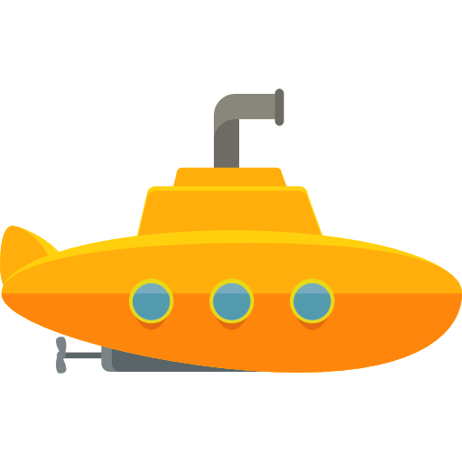

El submarino de Isabella
“Han pasado tantos años desde la última vez que la vi… como 5 o 6… ya ni recuerdo.”, le contaba a Fabi de camino a Mirthala. “Ale, se llama, Alejandra Uriegas. Es una muy buena amiga. Quiero que al menos tengas algo de contexto sobre quién es ella.”
“Probablemente nunca la había mencionado porque realmente nunca salió el tema y, nuevamente, hace mucho que ni siquiera la veo en persona. Es ingeniera industrial… y creo que vive en Dallas… o Houston… o alguna parte de Texas… creo que sí, en Dallas. Pero bueno, resumiendo podría decirse que es una persona que aprecio mucho.”
“¿Recuerdas el video que te mostré de las mohawks? Bueno esa fue mi primera presentación en un concurso de baile. Ale era como… de las ‘capitanas’ del equipo y pues básicamente gracias a ella pude integrarme a ese grupito. En el mundo de Difusión Cultural era conocida por ser una excelente bailarina. Muy talentosa, la verdad… y de alguna forma, ella sin saberlo, detonó esa parte artística de la que te he contado.”
“Seguramente me voy a ‘exponer’ al decir esto, porque tal vez Ale no piensa lo mismo de nuestra relación/amistad, pero aquí voy: ella es/fue para mi una de esas personas que podrías decir que marcaron tu vida. Y bueno, a pesar de que nuestra relación no ha sido muy cercana, yo la valoro mucho y por eso quiero que la conozcas. Ella es muy importante para mí.”
Comenté un par más de detalles sobre cosas de tu vida como: lo que recordaba de Hunt entre los mensajes de Hangouts (que solo usaba por tí, jaja; nadie usa eso), de cómo veías como desaparecía el departamento de tu trabajo, la relación que emergió entre tu ahora esposo y pues de tu embarazo. Sobre esto último, creo que le dije que no sabía qué iba a ser y tampoco sabía sí ustedes sabían, pero yo presentía por alguna razón que iba a ser niña. En fin… fue lo que pude resumir en una charla de 20 minutos.
El día que me enteré que estabas aquí y que existía esa posibilidad de verte nuevamente en carne y hueso me puse poquito emotivo. Te extrañaba, amiga, y como te das cuenta por todo lo anterior, realmente te considero una persona significativa en mi vida.
Extrañaba a la Ale-RC, a la Ale-Beetlejuice, a la Ale-Carmina-Burana, la Ale-Cadillac-El-Dorado al que le navajearon las llantas en un parque, a la Ale-a-la-que-le-limpiaba-los-lentes-en-las-mesitas-de-salas-de-ensayo porque no entendía como podía ver con tanta suciedad… y por supuesto a la Ale-”pórtate… regular”; no entiendo cómo pude olvidarme de esa frase tan emblemática, la verdad es que me dio gusto escucharla nuevamente, era algo que para mi solo decías tú.
Quiero que sepas que todos estos recuerdos, que aunque tal vez ya no representan a la persona que eres hoy en día, tienen un lugar en mi memoria e inevitablemente seguirán ahí hasta que ya no estén. No hay mucho que pueda hacer al respecto.
Por lo anterior, al voltear a ver ‘ese regalo’ que un día me diste, me vino a la cabeza la idea de retornarlo con el mismo amor/cuidado con el que lo recibí. Como expresé, genuinamente “creo que tiene más valor como reliquia familiar” por el significado que tiene para ti, que como símbolo de una amistad que va más allá de recordatorios materiales. Aunque mis palabras fueron breves (y que de todas maneras no le harían justicia nunca), por tu reacción creo que lograste percibirlo de esa manera. Eso me dio gusto.
La verdad es que temía que pudiera malinterpretarse como un gesto de rechazo, de “ya no quiero esto, tenlo de vuelta” y realmente digo esto solo para dejarlo muy claro de que nunca me pasaría por la cabeza. Más bien quisiera que lo vieras y fueras capaz de apreciar que pese a todos estos años que no hemos tenido comunicación, he cuidado (lo mejor posible) de este pequeño tesoro. Quisiera que lo vieras con mis ojos todos los días sobre mi buró, a veces sin siquiera verlo de manera activa, simplemente sabiendo que estaba ahí. Casi siempre en mi habitación, salvo a los días que estaba en mi maleta de viaje.
Estuvo en el 2016 en mi viaje a Colombia con la compañía de ConTempoTec en la que ‘tristemente’ estuve cuando tu no, en mis viajes con mi actual grupo de amigos que me han acogido y que probablemente no conoces pero que quiero y valoro tanto como a ti. En el 2017 me acompañó en Montreal los 5 meses que me fui a vivir a Canadá en donde también creé muy bonitas memorias. También estuvo conmigo en el 2018 en Paraguay después de un viaje bastante costoso y problemático donde me rompieron el corazón por última vez. Y claro, me acompañó durante la depresión del 2019, una pandemia y todo lo demás...
En las buenas y en las malas, siempre ha estado ahí cuidándome, o eso me gusta pensar. No importaba que tan largo o corto, que tan arriba o tan al fondo me sentía, el solo saber que estaba en una bolsita de mi maleta o en mi buró, me daba cierta tranquilidad. La misma que imagino que siento que te acompañó a ti desde que naciste. La misma tranquilidad y protección que espero provea a ‘la nueva tripulante’.
Gracias por tantas memorias. Estoy seguro que va a ser un viaje turbulento para ti, amiga, y aunque humilde es el gesto, espero logres ver desde donde viene todo esto que deseo para ti y tu familia.

